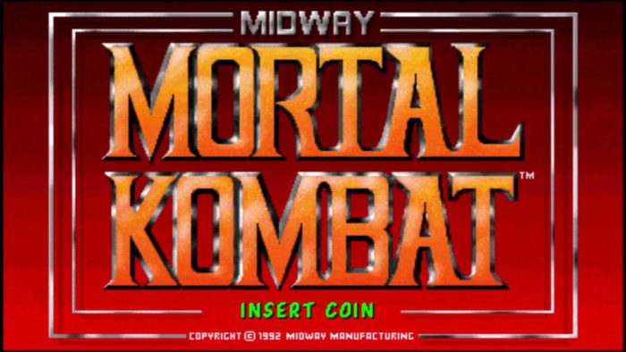
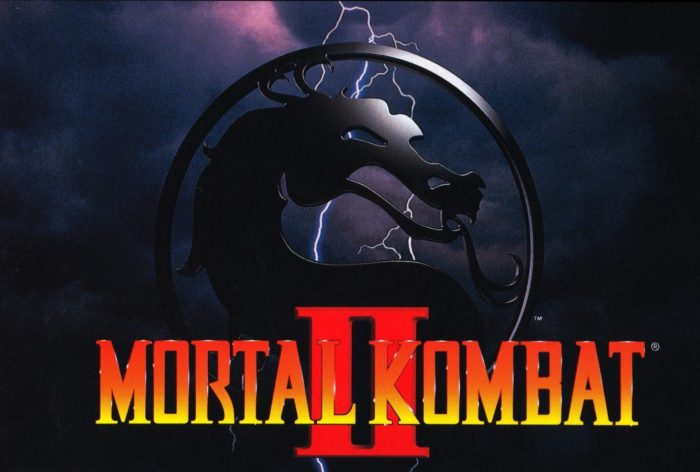
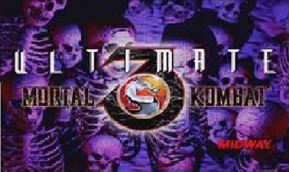
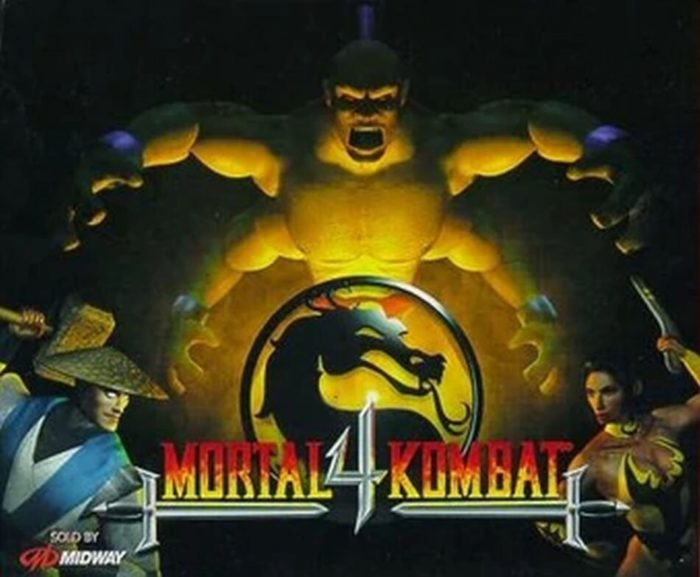
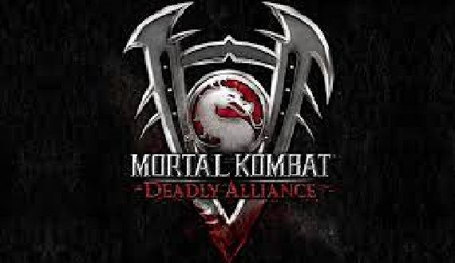
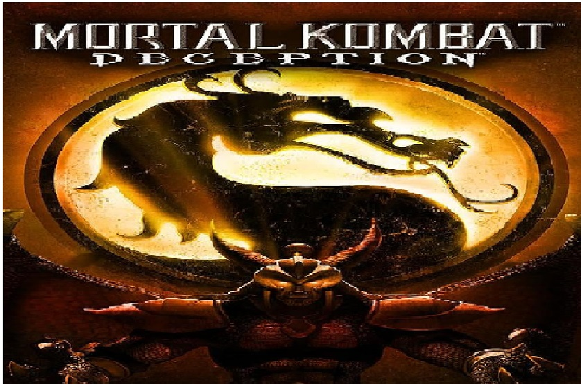
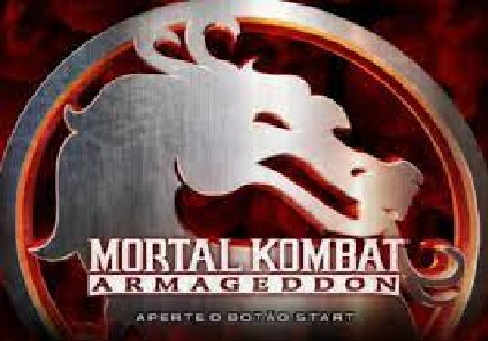
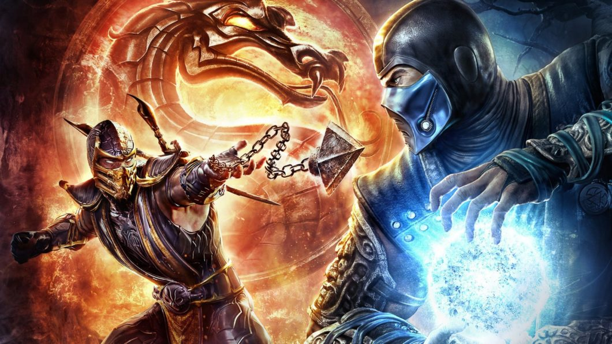
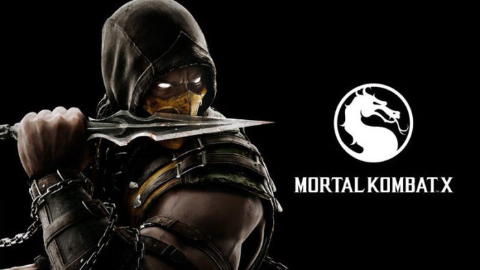
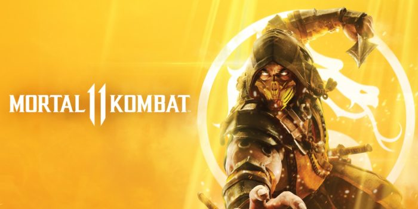

HISTÓRIA
Mortal Kombat (1992)
Raiden escolhendo três guerreiros para disputarem o Mortal Kombat e evitar que Outworld tenha o direito de controlar o Reino da Terra após vencer o décimo torneio seguido. Liu Kang, Sonya e Johnny Cage são os escolhidos de Raiden, com cada um tendo seu próprio objetivo a ser cumprido. Além da trama principal, existe a história de vingança de Scorpion, ninja do clã Shirai Ryu, que volta do Reino dos Mortos (Netherealm), visando matar Sub-Zero, ninja do clã Lin Kuei que assassinou Scorpion e sua família.
Mortal Kombat (1993)
Após o fracasso de Shang Tsung no primeiro torneio, Shao Kahn, o imperador de Outworld convida os lutadores para um segundo torneio e propõe que, caso lutadores vençam, Outworld não tentaria invadir a Terra, mas caso perdessem deveriam entregar o reino ao imperador. Kitana se junta ao time dos heróis. Kuai Liang, irmão mais novo do Sub-Zero original, assume o manto e está à procura de Scorpion, enquanto Jax Briggs entra no torneio para resgatar sua amiga Sonya, que ficou presa em Outworld. O torneio termina com mais uma vitória de Liu Kang, após vencer Kintaro e Shao Kahn
Mortal Kombat(1995)
Após outro fracasso, Shao Kahn decide invadir a Terra. Para isso ele ressuscita a rainha Sindel, mãe de Kitana e antiga soberana de Edenia, reino que havia sido completamente conquistado por Outworld. Com o retorno de Sindel é possível quebrar uma barreira de magia e invadir a Terra sem realizar um torneio. Durante a invasão, as almas de milhares de habitantes são roubadas. Durante os confrontos, Johnny Cage é morto por Motaro, Sub-Zero é perseguido por seu clã que planeja transformar todos os ninjas em ciborgues. Liu Kang vence Shao Kahn mais uma vez e as almas capturadas pelo imperador são devolvidas.
Mortal Kombat(1997)
Aqui temos a entrada de Quan Chi, um feiticeiro de Netherealm, seguidor de Shinnok um deus ancião exilado em NetherRealm. As decisões e traições do feiticeiro influenciam bastante no enredo de todos os jogos da franquia. Shinnok planeja se vingar Raiden e dos deuses anciões, mas o plano não funciona, fazendo com que ele e Quan Chi sejam banidos novamente para Netherealm.
Mortal Kombat: Deadly Alliance (2002)
Após servirem como auxiliares de seus mestres, Shang Tsung e Quan Chi resolvem se unir, com o objetivo de utilizar o exército de Onaga, o Rei Dragão, o primeiro governante de Outworld. Quan Chi descobriu o poderoso exército em uma de suas fugas entre reinos, utilizando o amuleto de Shinnok. O plano dos feiticeiros consistia em matar seus principais opositores: Shao Kahn em Outworld e Liu Kang no Reino da Terra para enfraquecer as defesas dos reinos e depois utilizar as almas dos guerreiros mortos nos corpos do exército de Onaga.
Mortal Kombat: Deception (2004)
Muitos anos antes dos eventos de Mortal Kombat, Onaga fingiu ser um emissário dos deuses anciões e convenceu o jovem Shujinko a reunir seis artefatos místicos, chamados Kamidogus. Durante muitos anos Shujinko seguiu em sua missão, acreditando estar ajudando os deuses, mas após reunir todos os objetos, acabou provocando a ressurreição de Onaga. O Deus do Trovão é vencido e após o confronto contra shang tsung e Quan chi, os feiticeiros decidem lutar entre si, pelo amuleto de Shinnok, quando Onaga aparece e se torna a maior ameaça a todos. Os três lutam juntos e Raiden se sacrifica em uma explosão para deter Onaga, mas sem sucesso. Raiden revive como uma versão mais impiedosa, traz Liu Kang de volta à vida como um zumbi. No fim, Shujinko acaba lutando contra Onaga, em busca de redenção e vence. Após a vitória, Raiden acaba matando Shujinko, por ter ajudado Onaga, mesmo que tenha sido enganado para fazer isso.
Mortal Kombat: Armaggeddon (2006)
Depois da derrota de Onaga, foi iniciada uma profecia relacionada ao fim do mundo, em que Blaze, um guerreiro elemental desperta e aquele que o vencesse, receberia o poder para governar todos os reinos. Vários guerreiros que estavam mortos, retornam à vida, procurando uma forma de chegar ao topo da pirâmide em que Blaze se encontra. Shao Kahn vence a disputa e quando vai acertar o último golpe em Raiden, esse gasta suas últimas forças para mandar uma mensagem para alguém. A mensagem era “Ele deve vencer”.
Mortal Kombat 9 (2011)
Mortal Kombat 9 é outro game importante, pois aproveita para fazer um “reboot” na série ao mudar acontecimentos como mortes de personagens e detalha algumas tramas pouco desenvolvidas nos três primeiros games da série. Quem recebe a mensagem enviada por Raiden é sua versão mais jovem, ainda no torneio do primeiro Mortal Kombat. Durante a trama, Sindel é trazida de volta à vida. Shao Kahn invade a Terra e muitos guerreiros são mortos no conflito, inclusive Kitana, Jax, Sub-Zero e Scorpion. Raiden entende que a mensagem é para que Shao Kahn vença o torneio e assim o armagedom seria evitado. O Deus do Trovão tenta convencer Liu Kang disso, mas sem sucesso. Os dois lutam e Raiden, acidentalmente mata Liu Kang. Muitos dos guerreiros mortos, acabam tendo suas almas capturadas e se tornam ferramentas de Quan chi. Após Kahn derrotar Raiden durante a invasão, os deuses anciões interferem e garantem um poder ainda maior para que Raiden vença Shao Kahn.
Mortal Kombat X (2015)
Mortal Kombat X reescreve os eventos a partir de Mortal Kombat 4, com Quan Chi ressuscitando Shinnok novamente. Desta vez, Raiden conta com a ajuda de Fujin e os demais guerreiros para evitar que o pior aconteça. A Terra passa por um período de paz por 25 anos. Neste tempo Johnny Cage e Sonya se casam, Sub-Zero e Scorpion resolvem suas diferenças e lideram seus clãs. Depois de muitas reviravoltas, Quan Chi consegue trazer Shinnok de volta. O plano do vilão consistia invadir o Templo do Céu dedicado aos deuses anciões e usar seu amuleto para corromper toda energia vital da Terra. Raiden consegue evitar que Shinnok execute seu plano e purifica a energia usando o próprio amuleto do vilão. Contudo, o Deus do Trovão se corrompe e se torna uma versão maligna no processo.
Mortal Kombat 11 (2019)
As alterações na linha temporal acabam chamando atenção de Kronika, a Guardiã do Tempo. Para consertar as mudanças, o plano de Kronika consiste em reiniciar a linha do tempo, com isso versões antigas dos lutadores, acabam encontrando suas versões atuais. Em muitas ocasiões há parcerias inusitadas, mas conflitos também acontecem. Durante a história, Raiden une sua alma ao corpo de Liu Kang, fazendo com que o herói se torne o Deus do Fogo. Contudo, mesmo com a união, não é possível parar o plano de Kronika. O último confronto entre Liu Kang e Kronika acontece no passado.
Mortal Kombat 1(2023)
Após os eventos de Mortal Kombat 11 Aftermath, Liu Kang se tornou um deus e resolveu começar um novo universo do zero, alterando a história dos lutadores, tomando o controle do tempo, se aproxima da ampulheta e encontra Kung Lao, o escolhendo como um campeão em uma outra realidade. É o início de uma nova era.